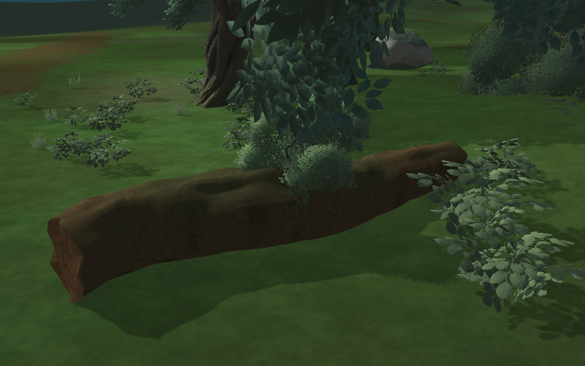
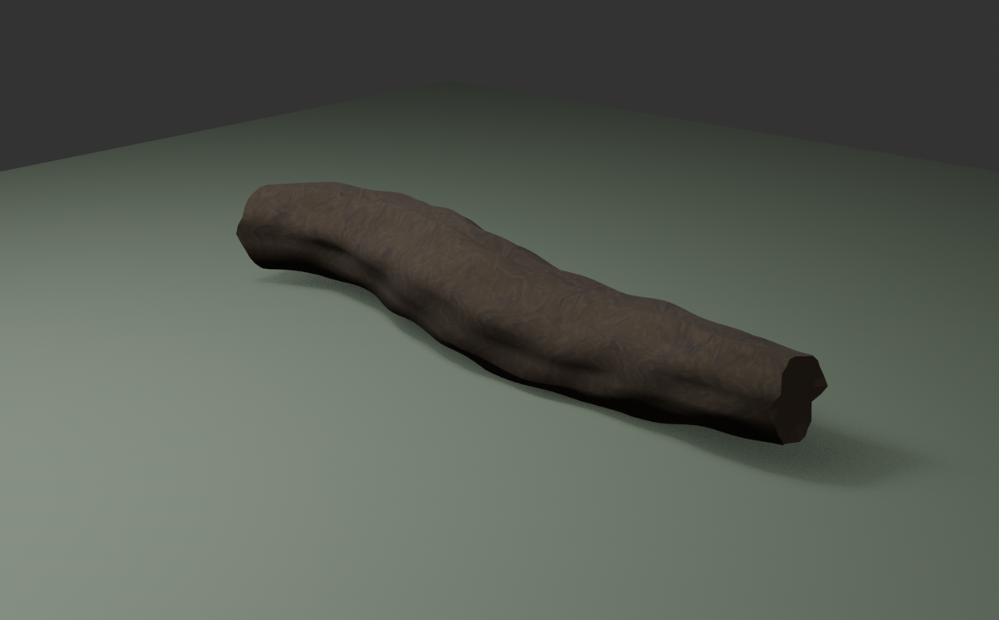
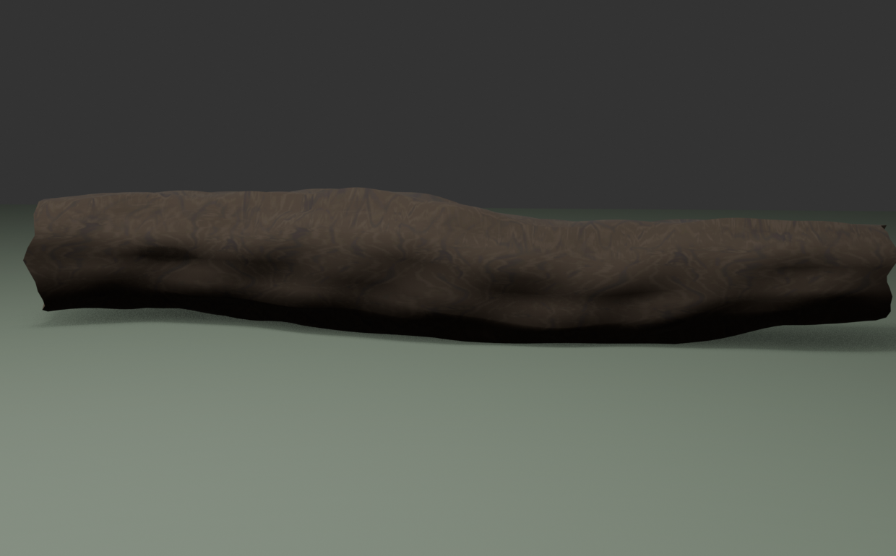
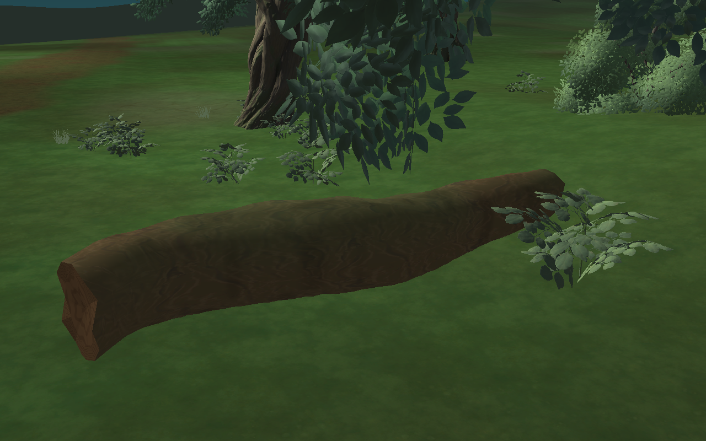
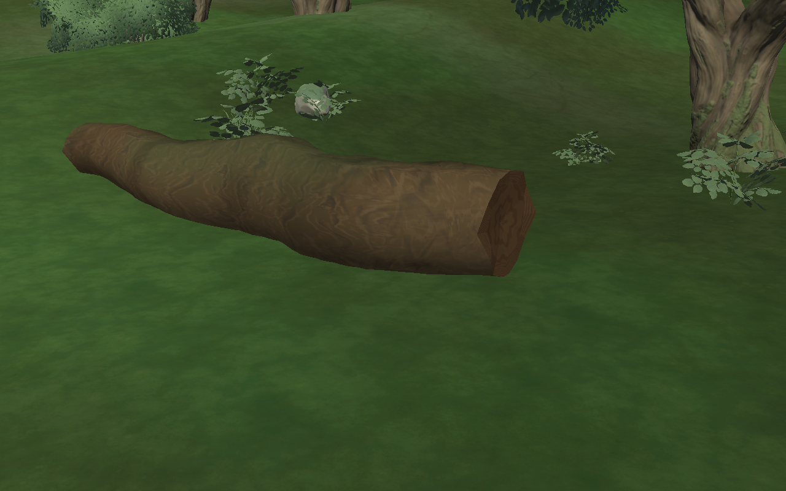
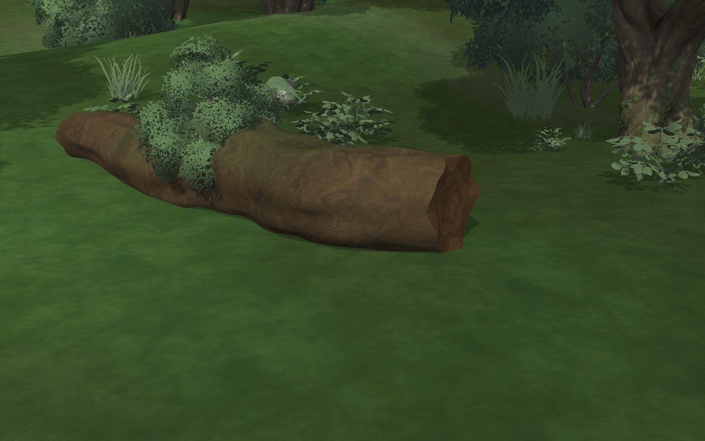

Blender制作の朽ちた倒木
通常の森林に配置する約8.7mの倒木。幹の曲がりと破断端をBlenderの実メッシュとして制作し、同じ無料森林素材から樹皮・苔の質感を調整。世界樹の造形とは独立しています。
法線修正前 → 修正後（別カメラで接地と全体を確認）


Blender原本・木口の近景・2つの画質





裏向きだった樹皮の面を修正し、木口を再造形。見た目だけでなく衝突形状も実装し、木には登れない設定です。木口の尖りと地面への食い込みも調整済み。この倒木は森林全体のうち一つの背景要素であり、ワールド全体の完成を意味しません。WebGL版で遊ぶ